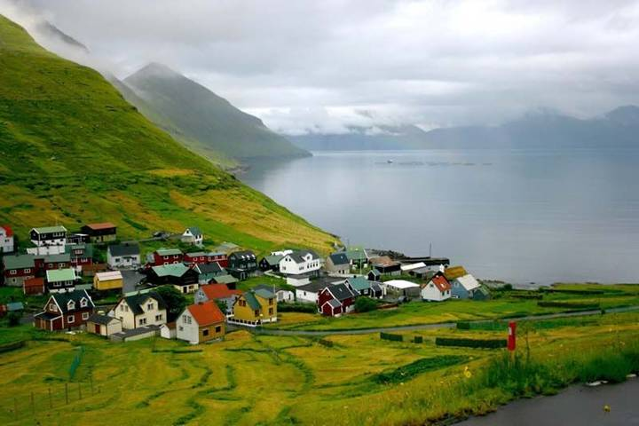

Use the border-radius property to create circled images: 
Tutorials for beginners
Where do you learn html?
Javascript
Interactive Javascript Tutorial
No idea....
Note:Internet Explorer 9 and earlier do not support the text-shadow property.